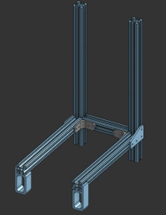
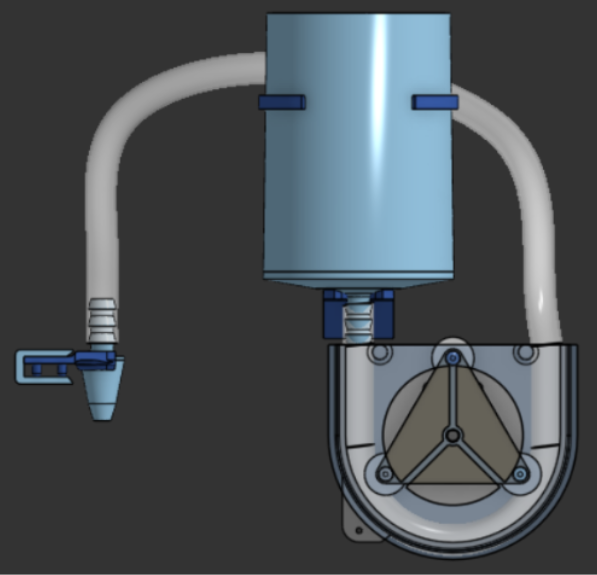
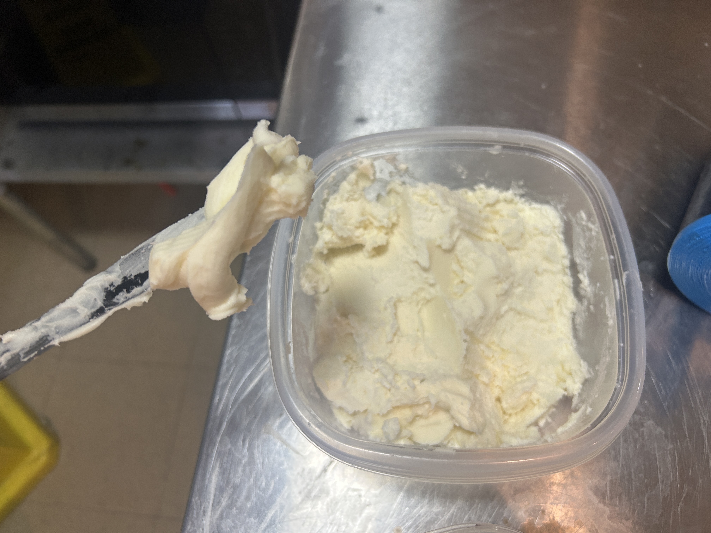

System Overview
The mechanical system consists of a three-axis CNC platform designed to move a frosting nozzle in X, Y, and Z directions with precision. The frame is constructed from aluminum extrusion for rigidity while maintaining a lightweight profile.

Figure 1: Complete mechanical assembly
Frame Design
The system frame is constructed using 80/20 extruded aluminum. Fasteners and supplemental parts were 3D printed as needed. The frame itself was designed around general sizing needs, but before exact sizing was known. The 80/20 ensured any new parts could be mounted anywhere with no changes to the frame. Altogether, there are six total segments of 80/20, fastened by 2 types of 3D printed brackets.
Figure 2: Linear rail and lead screw assembly
Movement Systems
Linear Motion
Rather than the traditional XYZ-axis, we chose to work in polar coordinates to avoid moving the heavy cake or having a large superstructure for a core XY-axis that could make removing the cake difficult.
All three axes use NEMA-12 stepper motors and A4988 motor controllers. The Z-axis is driven using a lead screw that moves the traveler along linear shafts.

Figure 2: Z-axis
The rad-axis is belt driven using static linear guide rails and a traveler holding our extruder head. The extruder head blocks a belt down the center of the rad-axis so the belt is spaced several belt idlers and tensioned manually using a custom belt clamp.

Figure 3: Rad-axis
The theta-axis is driven directly with a stepper motor into a belt drive which creates a belt pulley gear reduction to help us rotate the cake more precisely. The cake plate then sits on top of the larger belt pulley using 4 custom machines index pins that it rests on. The plate can be easily removed after the cake has been frosted for serving.

Figure 4: Theta-axis
Peristaltic Pump
To safely move the frosting through our system we chose a peristaltic pump to avoid food contamination by limiting the parts frosting comes into contact with. This type of pump is commonly used in the medical field and avoids touching the fluid by squeezing the flexible tubing it is in. The pump is fully 3D printed and driven by a Geartisan 12V DC 60rpm motor and a L298N driver. The frosting gravity feeds from a hopper into a food-safe ½” ID tube, and through the pump. The rollers push frosting through the tube, and, with some help from gravity, pulls more frosting in behind. The frosting is viscous enough that it will not flow out the extruder tip unless driven by the pump. All food contact parts of the system are chosen specifically for food safe attributes or coated in food safe epoxy. All food contact parts are also removable for easy cleaning.
Figure 5: Peristaltic Pump
Frosting
The frosting recipe used buttercream frosting as a base which is thinned using marshmallow fluff and water mixture. An unthinned buttercream frosting would not gravity feed out of the hopper due to narrow tube fittings. A larger tube would allow for slightly thicker frosting, but a syringe type extruder would work better. To make the frosting, start with american buttercream, then add roughly the same amount of fluff. Mix well, then add water until it flows smoothly off of your spoon. Careful not to add so much water that the butter will separate, or you’ll have watery frosting on your cake. If it becomes too watery add marshmallow fluff until it all reincorporates.
Figure 6: Frosting Before Thinning